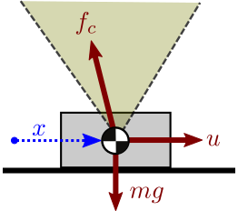
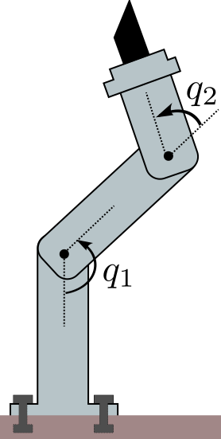
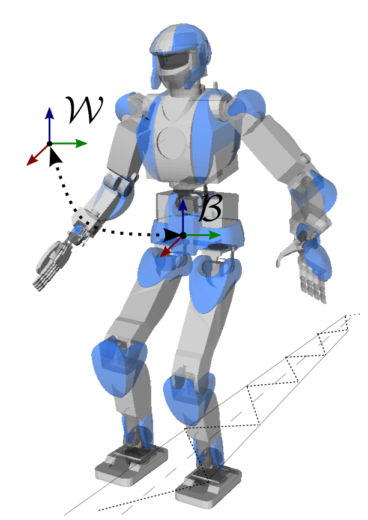

It is common to see the equations of motion of manipulators or humanoids
reminded in the preamble of research papers. Their origin can be tracked down
in textbooks, where they are derived from Newtonian or Lagrangian mechanics. In
this note, we will see what are the equations of motion for manipulators and
legged robots, and how to compute them in practice.
Definition
The equations of motion of a physical system describe its motion as a
function of time and optional control inputs. In their general form, they
are written:
F(q(t),q˙(t),q¨(t),u(t),t)=0,where
- t is the time variable,
- q is the vector of generalized coordinates, for instance the vector
of joint-angles for a manipulator,
- q˙ is the first time-derivative (velocity) of q,
- q¨ is the second time-derivative (acceleration) of q,
- u is the vector of control inputs.
These equations provide a mapping between the control space, the commands
that we send to actuators, and the state space of robot motions.
Example
Imagine a rigid block sliding on a table, which we can see as a 1-DOF (one
degree of freedom) system with
coordinate x. The operator applies a horizontal force u that
pushes the block forward.

If the force is high enough to overcome friction, applying Newton's second law
of motion (and Coulomb's model of sliding friction) we get: mx¨=u−μkmg with μk the kinetic coefficient of friction. This expression is of the form
F(x,x˙,x¨,u,t)=0.
Assumptions
In robotics, we usually make the following assumptions:
- Rigid bodies: the robot consists of a set of rigid bodies, called
"links", connected by actuated joints. This assumption allows us to use the
theory of rigid body dynamics, which is central to both manipulator and
humanoid robotics.
- D'Alembert's principle: internal forces are conservative. Internal
forces, also known as constraint forces, are the forces acting at each joint
to prevent motions that are not alongside the joint axis. Assuming that they
are conservative is equivalent to Gauss's principle of least constraint.
Case of manipulators

Manipulators are a particular type of articulated system where at least one
link is fixed to the environment. We suppose that the constraint is strong
enough to withhold any effort exerted on it. Under these assumptions, the
equations of motion for a manipulator can be written:
M(q)q¨+q˙⊤C(q)q˙=τ+τg(q)where, denoting by n=dim(q) the degree of freedom of the robot,
- M(q) is the n×n inertia matrix,
- C(q) is the n×n×n Coriolis tensor,
- τ is the n-dimensional vector of actuated joint torques,
- τg(q) is the n-dimensional vector of external joint torques caused by gravity.
Contrary to the general form F(q,q˙,q¨,τ,t)=0, this
expression is time-invariant: time t does not appear in the formula,
so that the current state (q,q˙) and applied joint torque
τ we can directly compute the resulting joint accelerations
q¨ (this operation is known as forward dynamics). The system has no
memory: regardless of how it got there, given its current state and joint
torques, it will always accelerate in the same way.
Inertia matrix and Coriolis tensor
The inertia matrix and Coriolis tensor can be derived from link inertias and
their Jacobians by:
M(q)q˙⊤C(q)=i∑Jit(q)⊤miJit(q)+JiR(q)⊤IiJiR(q)=i∑Jit(q)⊤miJ˙it(q)+JiR(q)⊤IiJ˙iR(q)−JiR(q)⊤(IiJiRq˙)×JiRwhere mi is the total mass of link i, Ii is its
inertia matrix,
and the Jacobian Ji of the frame attached to link i stacks:
- the rotational Jacobian JiR such that the angular velocity
ωi of the link frame with respect to the inertial frame
satisfies ωi=JiRq˙
- the translational Jacobian JCt such that the linear
velocity p˙i of the origin of the link frame (in the inertial
frame) satisfies p˙i=Jitq˙.
In OpenRAVE for instance, the former is computed by
ComputeJacobianAxisAngle and the latter by
ComputeJacobianTranslation. These formulas are good to keep in mind,
but there are more efficient techniques to compute the inertia matrix in practice. See Wieber's
comments on the structure of the dynamics of articulated motion for their derivation from
Gauss's principle of least constraint.
Gravity torques and external forces
External forces applied to the system can be expressed via a similar formula:
τext(q)=i∑Jit(q)⊤fext,i+JiR(q)⊤τext,iwhere fext,i denotes the resultant of external forces
applied to link i of the robot, and τext,i is
the moment of these forces. Together, they form the external wrench applied
to link i. Wrench coordinates should be consistent with the definitions
of our Jacobian matrices: we assumed above that the image of our Jacobian
matrices are expressed in the inertial frame, therefore wrench coordinates
should be expressed in the inertial frame as well.
Let us consider gravity as our external force. Assuming that the frame attached
to link i is located at the link's center of mass, joint torques caused
by gravity can be written as:
τg(q)=i∑miJit(q)⊤gBy definition, the Jacobian Jcom of the center of mass is such
that ∑imiJcom=∑imiJit. We can
therefore condense the formula above as τg(q)=mJcom(q)g.
Case of legged robots
Contrary to manipulators, legged robots such as humanoids can make or break
contacts with the environment. To fully describe their position in space, the
vector of generalized coordinates consists of not only the vector of joint
angles, but also six more coordinates that describe the position and
orientation of the floating base frame B (also known as
base link frame) with respect to the inertial frame W. If the robot
has n actuated joints, this means that q∈Rn+6. As the vector of actuated torques is still τ∈Rn, humanoids are underactuated systems: they cannot control
directly all their degrees of freedom.

With manipulators, the contact constraint with the environment was implicitely
enforced, as the vector of joint angles was independent from the world position
of the robot. With legged robots it is not the case any more, and contacts need
to be actively enforced by kinematic contact constraints.
To go further
My favorite introduction to equations of motion is Wieber's Some comments on
the structure of the dynamics of articulated motion, which I warmly recommend. It
is one of the rare papers where the formulas for M(q) and
C(q) are written down in plain and understandable form from link
inertias and Jacobian matrices. See the follow-up page on the constrained
equations of motion for more
details on this.
There is a particular choice of generalized to simplifies the formula of the
gravity torque vector. It consists in taking the coordinates of the center of
mass of the system as as translation coordinate for the floating base. With
such generalized coordinates q~, the equations of motion
become:
M(q~)q~¨+q~˙⊤C(q~)q~˙=[mg0n+3]+S⊤τ+J⊤f+τextCheck out Garofalo et al. (2015)
for a derivation of this property.
When using contact points and their corresponding contact forces, the contact
stability condition to avoid slippage is
that contact forces stay inside their respective Coulomb friction cones. This
condition generalizes to contact frames and their corresponding contact
wrenches: in this case, Coulomb friction generalizes to wrench friction cones. If wrenches are new to you, you might
want to learn more about screw theory which is
commonly applied in robotics.
Discussion
Feel free to post a comment by e-mail using the form below. Your e-mail address will not be disclosed.